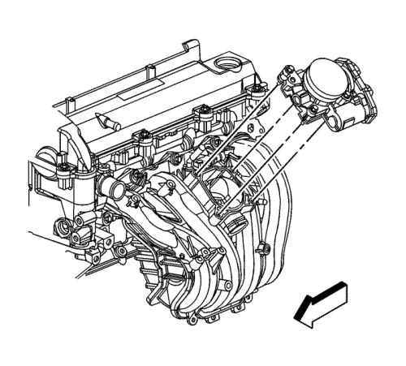

Sustitución del conjunto del cuerpo de la mariposa — LE5 o LE9
Procedimiento de desmontaje
Precaución No utilice disolvente de ningún tipo al limpiar las superficies de la junta del colector de admisión y del cuerpo del conjunto de acelerador, ya que podría dañar dichas superficies y el conjunto del cuerpo de acelerador.
Tenga cuidado al limpiar las superficies de junta del colector de admisión y del conjunto del cuerpo del acelerador, ya que herramientas afiladas podrían dañar dichas superficies.
Atención: No utilice disolventes que contengan metiletilcetona (MEK), Ya que podría dañar los componentes del sistema de combustible.
Nota: NO abra la hoja del acelerador con la llave de contacto en la posición ON, ya que podría activar un código de avería (DTC).
- Retire el conducto de salida del purificador de aire. Consultar Sustitución del conducto de salida del filtro de aire : LE5 o LE9 .
- Desenchufe el conector eléctrico del mazo de cables del motor del conjunto del cuerpo de la mariposa.

- Quite los pernos del conjunto del cuerpo de la mariposa.
- Desmonte el conjunto del cuerpo de la mariposa.
- Compruebe la junta del conjunto del cuerpo de la mariposa y sustitúyalo si fuera necesario.
Procedimiento de montaje
- Monte el conjunto del cuerpo de la mariposa en el vehículo.
Precaución: Consulte Precaución con las fijaciones en la sección Prólogo
- Coloque los pernos del conjunto del cuerpo de la mariposa.
Apretar
Apriete los tornillos a 10 N·m (89 lb in).
- Enchufe el conector eléctrico del mazo de cables del motor en el conjunto del cuerpo de la mariposa.
- Monte el conducto de salida del filtro de aire. Consultar Sustitución del conducto de salida del filtro de aire : LE5 o LE9 .
| © Copyright Chevrolet Europe. All rights reserved |